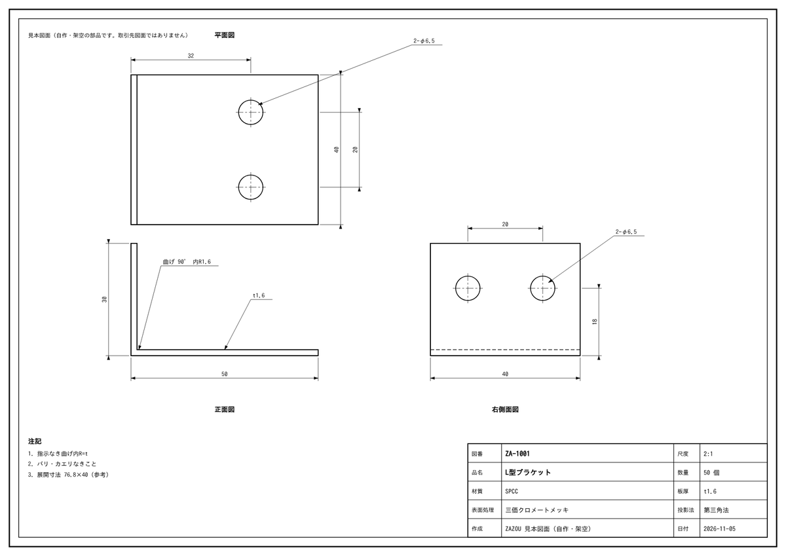
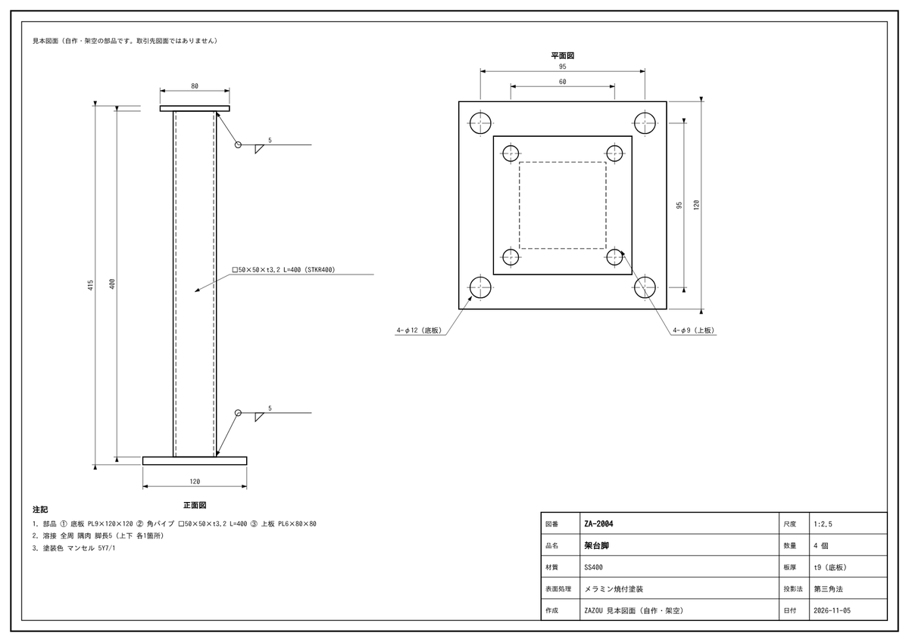
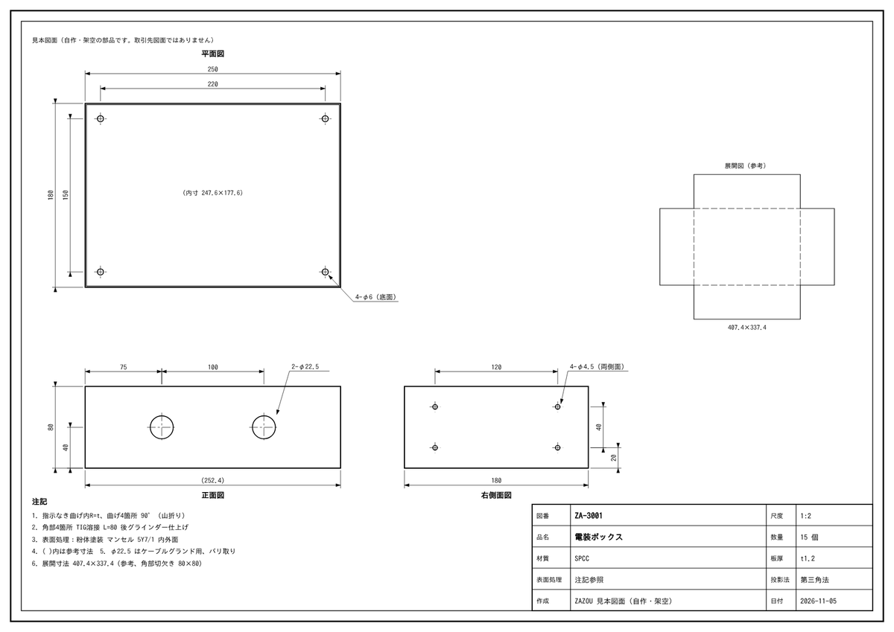

図面見積アプリ：
金属加工の図面PDFをAIが読み、寸法・材質・数量などを拾い出して、見積書の下書きをExcelで出します。最初はZAZOUが読み取りと下書きづくりを代行します（お客様はAIのアカウント不要）。読み方は、オンラインのAI・オフラインのAI（準備中）・AIを使わない（弊社の担当が読む）から選べます。AIは下書きまで。最終の金額は、お客様が確認して決めます。慣れた会社には、お客様ご自身のClaudeアカウントで自社で使う形も、後から選べます。
直接のご依頼なら、図面1枚を無料でお試しいただけます。メール：matsumura.takashi@zazoucorp.com
どの読み方でも、要確認の項目を挙げ、最終の金額はお客様が確認して決めます。
自作の見本図面10枚（板金・製缶・機械加工、易・中・難）から3枚を載せます。表は、図面を作っていないAIが読んだ結果を、正解と照らし合わせたものです。

| 項目 | AIの読み取り | 自信度 | 判定 |
|---|---|---|---|
| 品名 | L型ブラケット | 高 | 正解 |
| 材質 | SPCC | 高 | 正解 |
| 板厚 | 1.6 mm | 高 | 正解 |
| 外形寸法（幅×奥行×高さ） | 50×40×30 | 高 | 正解 |
| 数量 | 50 個 | 高 | 正解 |
| 穴 | φ6.5×4 | 高 | 正解 |
| 曲げ数 | 1 回 | 高 | 正解 |
| 溶接長 | 0 mm | 高 | 正解 |
| 表面処理 | 三価クロメートメッキ | 高 | 正解 |

| 項目 | AIの読み取り | 自信度 | 判定 |
|---|---|---|---|
| 品名 | 架台脚 | 高 | 正解 |
| 材質 | SS400 | 高 | 正解 |
| 板厚 | 9 mm | 中 | 正解 |
| 外形寸法（幅×奥行×高さ） | 120×120×415 | 高 | 正解 |
| 数量 | 4 個 | 高 | 正解 |
| 穴 | φ12×4、φ9×4 | 高 | 正解 |
| 曲げ数 | 0 回 | 高 | 正解 |
| 溶接長 | 400 mm | 中 | 正解 |
| 表面処理 | メラミン焼付塗装 | 高 | 正解 |
板厚と溶接長は自信度が「中」。金額への影響が大きい項目なので、アプリはこの2つを「要確認」に出します（値は正解でした）。

| 項目 | AIの読み取り | 自信度 | 判定 |
|---|---|---|---|
| 品名 | 電装ボックス | 高 | 正解 |
| 材質 | SPCC | 高 | 正解 |
| 板厚 | 1.2 mm | 高 | 正解 |
| 外形寸法（幅×奥行×高さ） | 250×180×80 | 中 | 正解 |
| 数量 | 15 個 | 高 | 正解 |
| 穴 | φ6×4、φ22.5×2、φ4.5×4 | 高 | 誤り 正しくは φ6×4、φ22.5×2、φ4.5×8 |
| 曲げ数 | 4 回 | 高 | 正解 |
| 溶接長 | 320 mm | 高 | 正解 |
| 表面処理 | 粉体塗装 マンセル5Y7/1 内外面 | 高 | 正解 |
唯一の誤り：右側面図の「4-φ4.5（両側面）」を4個と読みました。正しくは両側面で8個です。しかもAIの自信度は「高」でした。このため、アプリは「両側」「n箇所」などの倍数の注記があれば、自信度に関係なく「要確認」に出し、人が確かめます。
| 項目 | 計算のもと | 金額 |
|---|---|---|
| 材料費 | SPCC t1.2 展開 407.4×337.4（約1.29kg） | 233円 |
| 切断費 | レーザー切断（外周＋穴） | 273円 |
| 穴あけ費 | 14個 | 280円 |
| 曲げ費 | 4回 | 400円 |
| 溶接費 | 320mm | 1,600円 |
| 表面処理費 | 粉体塗装 | 825円 |
| 加工費の数量割引 | 15個のため加工費の5%引き | -169円 |
| 1個あたり | 段取り費を除く | 3,442円 |
| 数量 | 15個 × 3,442円 | 51,628円 |
| 段取り費 | 板金・1ロット | 3,000円 |
| 合計（税抜） | 1個あたり 3,642円 | 54,628円 |
単価はすべて試作用の仮の値です。導入時（2段目）に御社の単価表と見積のルールに置き換えます。最終の金額は人が決めます。
見本はすべて自作・架空の部品の図面です。お客様の図面は載せていません。
自作の見本図面10枚（板金・製缶・機械加工）を、図面を作っていないAIに読ませ、1枚あたり9項目（品名・材質・板厚・外形寸法・数量・穴・曲げ数・溶接長・表面処理）を正解と照らし合わせました（10枚×9項目＝90項目）。
実際の図面（手書きの注記・スキャン）では、正確さは下がります。そのため、導入時（1段目）に御社の図面で測定します。
読み違えやすい「両側」「n箇所」などの倍数の注記は、アプリが自動で「要確認」に出します。溶接長・数量など金額への影響が大きい項目も、AIの自信が高くないときは「要確認」に出します。人が確かめてから見積書にします。
AIは読み間違えることがあります。読み取り結果と見積の下書きは、必ず人が図面と見比べて確認し、金額は人が決めます。
| 段階 | 内容 | 料金 |
|---|---|---|
| 1段目 お試し導入 | 御社の図面で試し、読み取りの正確さと手間の減り方を確かめます（約17時間まで）。 | 50,000円 |
| 2段目 御社に合わせる | 御社の単価表と見積のルールに合わせて、見積書の下書きを作れるようにします（約50時間）。 | 150,000円 |
| 3段目 広い範囲の仕組みづくり | より広い範囲の仕組みづくり（約93時間）。 | 280,000円 |
| 保守 | 使い方の相談・小さな直し（月3時間まで）。 | 月10,000円 |
| 時間単価 | 上記以外・追加の作業。 | 3,000円／時間 |
時間を超える分は、事前にお見積りのうえ時間単価3,000円で承ります。図面1枚の無料お試しもあります。
松村貴士（ZAZOU株式会社 代表、滋賀県日野町）。パナソニックで2005〜2020年、チューナの機構設計、洗濯機・ロボット掃除機の開発に携わり、図面を描き、読んできました（CATIA・NX・SolidWorks・MICRO CADAM Helix）。2020年の独立時は設計事務所として図面の仕事もしていました。
見本：図面から見積書までの流れ直接のご依頼なら、図面1枚を無料でお試しいただけます。メール：matsumura.takashi@zazoucorp.com